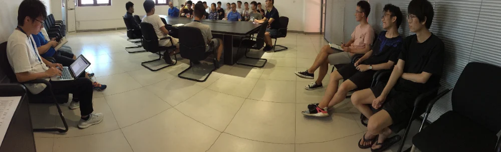
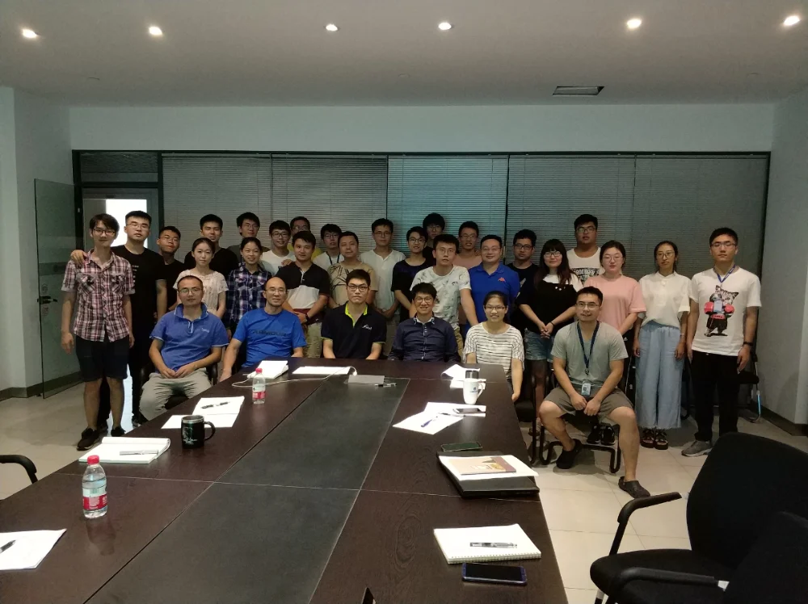

组会，对于科研团队来说一定不会陌生。
作为一个团队内信息交互的平台，包括研究员、博士后、博士生、硕士生和其他员工之内的每个人，每周都会在这里简单汇报一下自己做过的工作以及接下来要做的工作，目的是让团队内的信息至少达到最低限度的透明度，从而使团队内的成员能够对组里的工作形成一定的共识，从而达到相应的合力效果。
所以说，组会是科研组织具有团队属性一个重要前提。作为一个积极向上，团聚力强大的科研团队，iMED中国团队自然也每周都会召开一次组会。
本次的iMED中国组会自然也是按照惯例举行，只不过由于一些原因，直到晚上我们才腾得出时间来开会。巧合的是，晚上举行的这次组会又比平时的显得更加“厚重”一些，一来是晚上组会后还需要追加一个研究生报告，一个科研讨论会，以及一个科研员工的欢送仪式。
今晚的8楼，格外的热闹。

在今天下午5点的时候，我们iMED中国的一行人来到了会议室，怀揣着怀念而又衷心祝福的感情，集体欢送了一个将要去到海外深造的员工。张洋，4月初的时候来到了iMED中国团队，在6月份我们举行的IPMED会议中充当了十分重要的角色，可以说，他出彩的表现让我们其他人变得如释重负，我们感谢他在这段时间的努力和付出。祝愿他能在海外取得一个好的成绩，由于还存在合作关系，也期待他未来某天的回归。
张洋员工的欢送会之后，吃完饭回来，我们开始了本次的组会。此次参会的人数多达30人，人员齐整，规模宏大。在刘江老师的主持下，会议有条不紊的进行了1个小时。前期工作总结，个人工作汇报，后期发展规划，1个小时内我们将会议完整开完，中间不乏激烈的讨论，和精彩的观点陈述。
组会结束后，机会难得，我们在一起合了个影，毕竟由于工作出差，学生流动等原因，这么多人齐聚一堂也就不那么常见了。

然而这还没完！大家稍作休息后，还得准备今晚的另一个大头戏，研究生考核和科研讨论会，毕竟这次是“组会Plus”，那么接下来就是研究生们的舞台。
“全部通过！”
直到刘老师果断的说出这句话，会议才结束，最终结束时间是十点。
在最后的这段会议中，我们组的新同学所做的演讲非常的好，受到了一致的好评，我们组的技术小达人——“刘博”所做的演讲也继续着一贯的高水准，题目是神经网络的可视化，在不失专业性的情况下做出了生动形象演讲表演，在坐的同学们都觉得非常的佩服。
这一次，大家是真的开累了，但在热烈的讨论氛围和激烈的逻辑冲撞的4个多小时里，大家成就感满满，结束后仍然意犹未尽。或许，并不是所有的组会都能被称作“组会plus”，像这样“痛快”的开一次“晚会”的情况在我们团队内也是很少见的事情了。但事实上，每次开会都是能更清晰的看见iMED中国全貌的一次机会，或许iMED中国一个更美好的未来，就是由这一次次相聚一堂所进行的探讨和解疑，所一步一步朝着更准确清晰的方向去推动的！